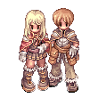

Selecione um Personagem
-

- 
-

Sniper
Eles se especializam em ataques à distância precisos e poderosos. O Sniper é o mestre do Arco. Nas mãos de um Snipers, o arco é um instrumento mortal capaz de causar massivos danos e carnificina. Eles ganharam uma nova habilidade chamada Falcon Assault com a ajuda de seu amigo de longa data, o falcão. Quando a amizade se fortalece, o mesmo acontece com seu poder. Eles também têm habilidades que amplificam seu domínio do arco, bem como habilidades de flecha perfurante.